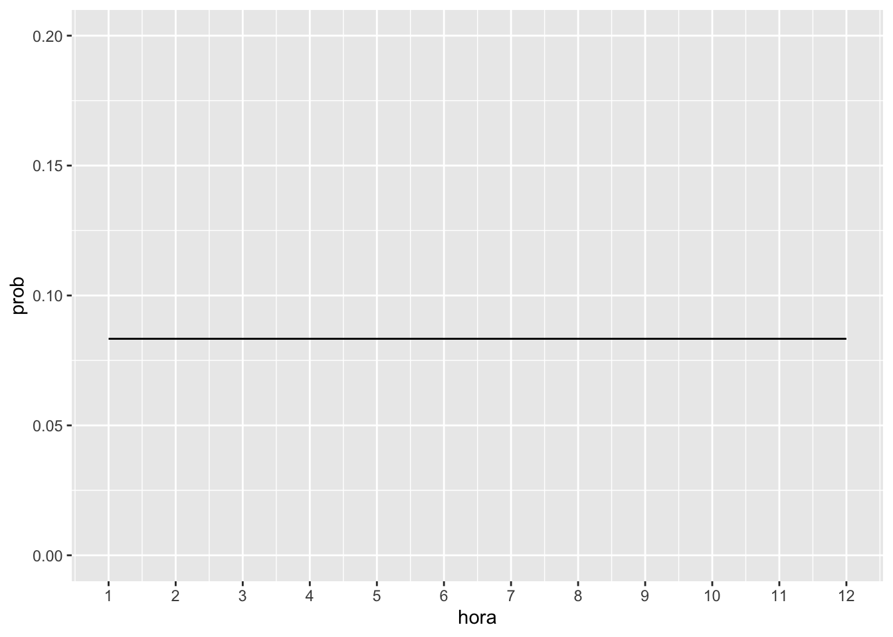

CAPÍTULO 5 Variável Aleatória Contínua
5.1 Distribuições contínuas
Para entender a diferença entre variável aleatória discreta e a variável aleatória contínua é necessário definir cada uma delas:
Variável Aleatório Discreta: assume valores específicos. Exemplo: número de clientes que entram na loja, número de mortes, número de nascimentos, etc.
Variável Aleatória Contínua: assume qualquer valor no domínio dos número reais. Por isso entre os valores 2 e 3, por exemplo, pode existir infinitos valores para uma variável aleatória contínua. Exemplo: peso, altura, preço de commodities, temperatura, quantidade de chuva em milímetros, etc.
Sartoris (2013) exemplica as duas situações de variáveis discretas e contínuas usando o exemplo de relógio digital e de relógio analógico considerando somente a hora como valor da variável. No caso do relógio digital a mudança de valor ocorre de forma discreta, diferentemente da situação do relógio analógico que a mudança de horas é de forma gradual.
Para o caso discreto é possível calcular a probabidade para os valores específicos. Por isso \[ P(2<x<3) \neq P(2\leq x \leq 3) \neq P(2 < x \leq 3) \neq P(2\leq x < 3) \]
Já para o caso contínuo não é possível calcular a probabilidade para um valor específico da variável. Inclusive, no limite, a probilidade de um valor específico para uma variável aleatória contínua é igual zero. Portanto,
\[ P(2<x<3) = P(2\leq x \leq 3) = P(2 < x \leq 3) = P(2\leq x < 3) \]
A situação do exemplo do relógio analógico do Sartoris (2013), como a mudança de hora ocorre de forma gradual e a probabilidade é igual para qualquer valor da hora, trata-se de uma distribuição de probabilidade uniforme contínua. Grafico gerado usando a função gglot do pacote ggplot2.
library(ggplot2)
hora <- c(1, 2, 3, 4, 5, 6, 7, 8, 9, 10, 11, 12)
prob <- c(1/12, 1/12, 1/12, 1/12, 1/12, 1/12, 1/12,
1/12, 1/12, 1/12, 1/12, 1/12)
horaanalogica <- as.data.frame(cbind(hora, prob))
horaanalogica## hora prob
## 1 1 0,08333333
## 2 2 0,08333333
## 3 3 0,08333333
## 4 4 0,08333333
## 5 5 0,08333333
## 6 6 0,08333333
## 7 7 0,08333333
## 8 8 0,08333333
## 9 9 0,08333333
## 10 10 0,08333333
## 11 11 0,08333333
## 12 12 0,08333333ggplot(horaanalogica, aes(hora, prob)) + geom_line() +
xlim(0, 13) + ylim(0, 0.2) + scale_x_continuous(breaks = seq(1,
12, by = 1))
Nesta situação, matematicamamente faz sentido calcular a probabilidade para um intervalo de valores da variável e não para valores específicos com é no caso da variável aleatória discreta. Dessa forma com a função de probabilidade da distribuição, denominada de função densidade de probabilidade (f.d.p.), pode-se obter a probabilidade obtendo a área abaixo da curva desta função. Matematicamente, a probabilidade pode ser obtida através da integral definida desta função para o intervalo de valores em questão.
Note que para \(f(x)\) ser função densidade de probabilidade, precisa atender as seguintes propriedades definidas pela teoria da probabilidade:
- a soma das probabilidades para todo os valores definidos da variável \(x\) dever ser igual a 1.
- a probabilidade obtida através de \(f(x)\) não pode ser negativa.
No exemplo da relógio analógico a probabilidade da hora estar entre 2 e 3 é a área da curva ou reta da distribuição uniforme contínua cujo valor constante da probabilidade é \(1/12\). O intervalo entre 2 e 3 proporciona um intervalo equivalente a unidade, uma vez que intervalo pode ser calculado entre a diferença entre o valor final e o valor inicial. Dessa forma:
\[ P(2 < x < 3) = \dfrac{1}{12} \times \left( 3 - 2 \right) = \dfrac{1}{12}, \] ou seja, \[ P(2<x<3) = P(2\leq x \leq 3) = P(2 < x \leq 3) = P(2\leq x < 3) = \dfrac{1}{12} \]
Exemplo numérico sobre função densidade de probabilidade
Exemplo 4.1.3 da página 79 do Sartoris (2013). Dada a função desnidade de probabilidade da variável aleatória contínua
5.2 Distribuição Normal
5.3 Teorema de Tchebichev
Referências
Sartoris, Alexandre. 2013. Estatística e Introdução à Econometria. 2nd ed. São Paulo: Saraiva.